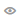

| Monitoring Trello boards | |
You see an eye-icon  on the cards, lists and boards you are monitoring and you receive email notifications every time something changes on that item.
If you are also using the Trello App, you can see app notifications and badges on your mobile devices.
When you open Trello in the browser or in the app, the icons show if there are new notifications since you last closed Trello.